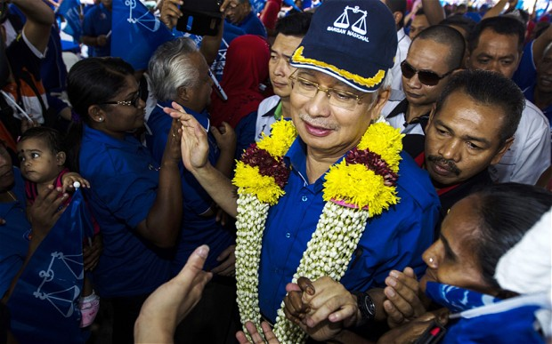

Blindtext
Malaysia election: Najib Razak, the British-educated political insider
Son of the country’s second Prime Minister and an MP at the age of just 22, Najib Razak is perhaps Malaysia’s ultimate political insider. (SEE ORIGINAL)

His formative years took place in Britain, including a spell at the public school, Malvern Boys College in Worcestershire and later a degree in Industrial Economics from Nottingham University.
After entering politics as the youngest MP since independence, Mr Najib has held several cabinet positions at the heart of the political and economic establishment. These prestigious postings included stints as minister of energy, telecommunications, education, finance and defence.
As defence minister Mr Najib became embroiled in a major corruption scandal involving the sale of two French submarines in 2002. He has denied any wrongdoing and an investigation in France continues.
The scandal then took on a bizarre, lurid twist when an aide of Mr Najib was accused of murdering a Mongolian national resident in the coutnry. The aide was subsequently acquitted.
Mr Najib finally became Prime Minister in 2009, replacing Abdullah Badawi after their ruling National Front coalition (Barisan Nasional) lost its two-thirds majority in the Malaysian parliament.
His record in office after assuming the premiership has been mixed. Credited by some for introducing reformist measures such as a repeal of the harsh internal security law, his critics argue that these changes amount to mainly “window dressing” and an exercise in sophisticated public relations.
“On reforms, he is the emperor without any clothes”, said Bridget Welsh, an expert in Southeast Asian studies in an interview with the AFP news agency.
The coalition’s controversial racially based affirmative action policies are popular among the majority ethnic-Malays and some indigenous groups given the advantages it affords them in a number of spheres ranging from jobs and education to real estate and loans. Almost a quarter of the population are naturalised Chinese who are said to control a great deal of the country’s economic interests, while Indians who make-up 7.1 per cent are among the country’s poorest.
Wong Joon Ian, 31, a Malaysian studying in Britain who has travelled back to his home country especially to take part in the elections due on Sunday said that he is tired of the ruling Barisan Nasional coalition.
“For nearly 60 years we have been governed by the increasingly corrupt, racist and criminal Barisan Nasional government and I, and many other Malaysians, have had enough,” he said.
“We need change and we need political maturity. Malaysians have already overcome racial and religious provocations in spite of the Barisan Nasional government."
Mr Najib's economic stimulus programme, dubbed the "New Economic Model" seems to have borne some fruit for the incumbent in the lead-up to the election. His personal popularity rating has hit a healthy 61 per cent according to a poll by the Merdeka Centre for Opinion Research. Mr Najib’s governing party on the other hand has fallen out of favour among voters with figures showing that its rating has slipped to below 50 per cent in the same poll.